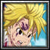

Player profile
roshidere
Rank #30server.eurobattle.netSeason 2
Most played · 黒崎 一護断界
Matches195 wins · 14 losses
Win rate26%
Avg K / D / A44.4 / 37.1 / 9.7
Avg APM102
Avg damage dealt291.4k
Avg damage taken162.5k
Heroes played
Explore heroes →| HERO | MATCHES | WIN RATE | AVG K / D / A | AVG DMG |
|---|---|---|---|---|
黒崎 一護断界Most played | 2 | 100% | 47.0 / 23.0 / 10.5 | 249.6k |
EX 4 身勝手の極意 | 2 | 50% | 56.0 / 40.0 / 7.0 | 325.0k |
Shirosaki | 2 | 0% | 36.5 / 49.5 / 10.5 | 320.3k |
Spirit of Destruction | 1 | 100% | 61.0 / 33.0 / 9.0 | 349.6k |
《氷結の魔女》 | 1 | 100% | 63.0 / 31.0 / 16.0 | 368.4k |
Majin Alter | 1 | 0% | 52.0 / 43.0 / 10.0 | 329.9k |
ヤヒコ | 1 | 0% | 42.0 / 38.0 / 17.0 | 296.7k |
カルナ | 1 | 0% | 53.0 / 31.0 / 7.0 | 373.0k |
『Shadow』 | 1 | 0% | 26.0 / 45.0 / 16.0 | 236.1k |
黒崎 一護 | 1 | 0% | 35.0 / 34.0 / 8.0 | 202.7k |
ユーハバッハ | 1 | 0% | 54.0 / 34.0 / 10.0 | 279.6k |
黒鉄一輝 | 1 | 0% | 28.0 / 48.0 / 3.0 | 220.4k |
Ragna | 1 | 0% | 35.0 / 34.0 / 5.0 | 231.0k |
Kiana Kaslana | 1 | 0% | 41.0 / 30.0 / 5.0 | 278.2k |
藍染 EX | 1 | 0% | 33.0 / 39.0 / 12.0 | 252.5k |
 Meliodas | 1 | 0% | 42.0 / 40.0 / 11.0 | 328.0k |
Averages use recorded statistics only; unavailable historical values are shown as —.
Recent matches
Open a match for its scoreboard and kill matchups.
LOSS62:48
MCB #2000209
07 Nov 2026 · 00:02 WIB
52.0 / 43.0 / 10.0View match →
LOSS60:08
MCB #2000208
06 Nov 2026 · 01:55 WIB
42.0 / 38.0 / 17.0View match →
LOSS59:20
MCB #2000206
05 Nov 2026 · 21:04 WIB
53.0 / 31.0 / 7.0View match →
WIN63:42
MCB #2000204
04 Nov 2026 · 21:34 WIB
61.0 / 33.0 / 9.0View match →
LOSS59:56
MCB #2000199
02 Nov 2026 · 22:14 WIB
26.0 / 45.0 / 16.0View match →
WIN60:41
MCB #2000197
02 Nov 2026 · 20:03 WIB
63.0 / 31.0 / 16.0View match →
LOSS54:49
MCB #2000195
02 Nov 2026 · 02:11 WIB
35.0 / 34.0 / 8.0View match →
LOSS69:58
MCB #2000194
02 Nov 2026 · 00:58 WIB
31.0 / 48.0 / 15.0View match →
LOSS64:44
MCB #2000189
31 Oct 2026 · 23:02 WIB
54.0 / 34.0 / 10.0View match →
LOSS61:41
MCB #1000066
30 Oct 2026 · 22:51 WIB
28.0 / 48.0 / 3.0View match →